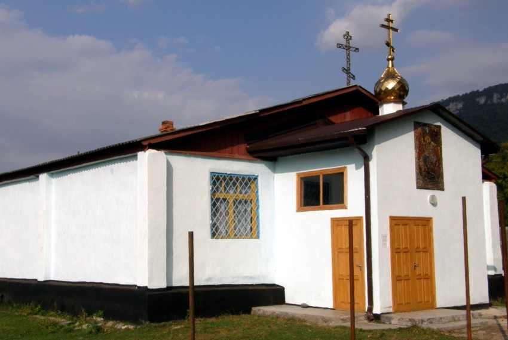

Станица Даховская, Майкопского отдела основана в 1862 г. Расположена при слиянии рек Дах ( с притоком Сохраем ) и Белой, среди возвышенностей, покрытых лесом и кустарником. Главенствующей вершиной является г. Гут. Занятия жителей: лесопромышленность, скотоводство, хлебопашество ( в очень незначительных размерах. Георгиевский храм построен в 1864 г. через 2 года после основания станицы при пособии от войска в 9000 р. Сделана церковь была из дубового бруса на фундаменте из каменных блоков. Имела форму ковчега ( креста ) с двумя приделами Состав причта: 1 священник и 1 псаломщик. К приходу приписано село Алексеевское ( нынешнее с. Хамышки ), населенное крестьянами-переселенцами из внутренних губерний. Расположено село к югу от станицы, в 18 верстах вверх по течению р. Белой. Население 2759 душ, из них в селе Алексеевском - 372, в хут. Сохрай - 178, раскольников- 9, «новоизраильцев»- 14. В сентябре 1920 года, во время казни казаков отрядом ЧОНа, священник Сергей Подлужный отказался покинуть прихожан станичного храма и был расстрелян вместе со всеми. По рассказам он, возложив на главу Псалрырь, всю дорогу до Расстрельной поляны пел псалмы, ободряя и утешая своих духовных чад. Красноармейцы отталкивали его, пытаясь прогнать, говорили что он свободен и может уходить, но он по слову Господнему остался до конца. В середине тридцатых годов церковь закрыли, сделав из неё склад. Во время оккупации станицы немцами служба в храме восстановилась, но после войны храм переоборудовали в клуб. Так и стоял храм без креста до конца 80-х, пока в1990 г. глава сельсовета Рыльцев В.И. не принял решение разобрать его под предлогом аварийности, хотя нужно было всего лишь починить крышу. Местные активисты-коммунисты Кудиновы не упустили возможности поживиться. Безбожные сыновья и внуки тех, кто расстреливал казаков, сделали из крепчайших дубовых досок растащенного храма свои свинарники, а остальное стопили в печках. В наши дни по благословению владыки Пантелеимона в станице открылся новый приход. Оборудовали здание бывшего сельповского магазина и люди своими усилиями совершили чудо: в станице Даховской теперь снова есть Свято-Георгиевский храм!